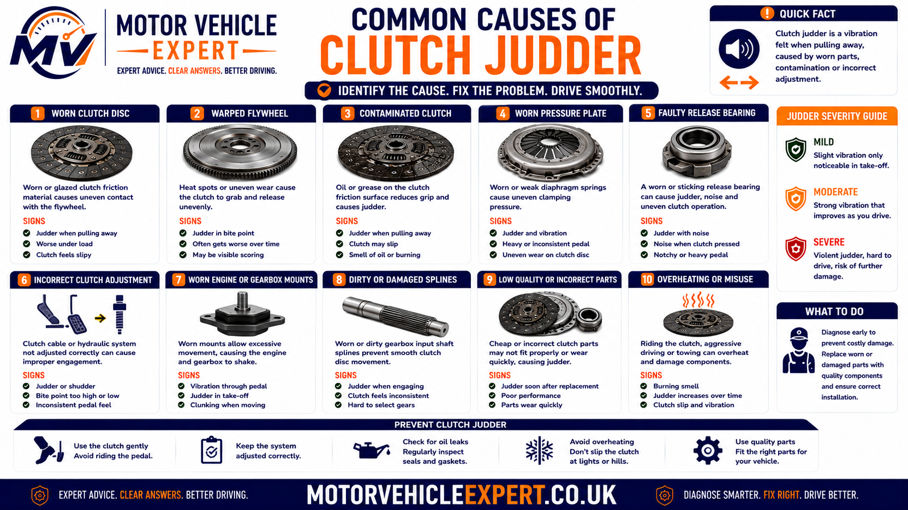
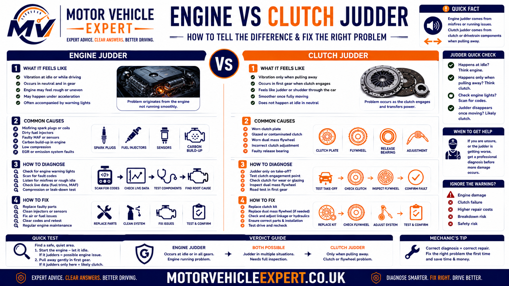
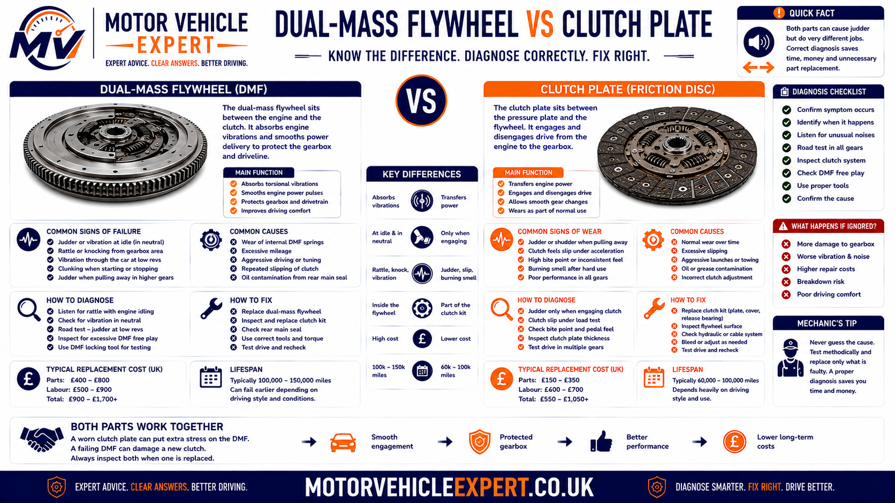
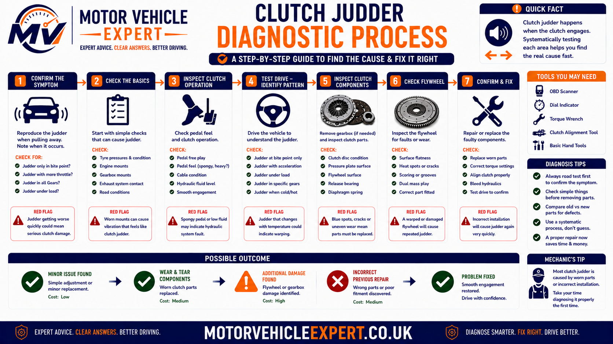
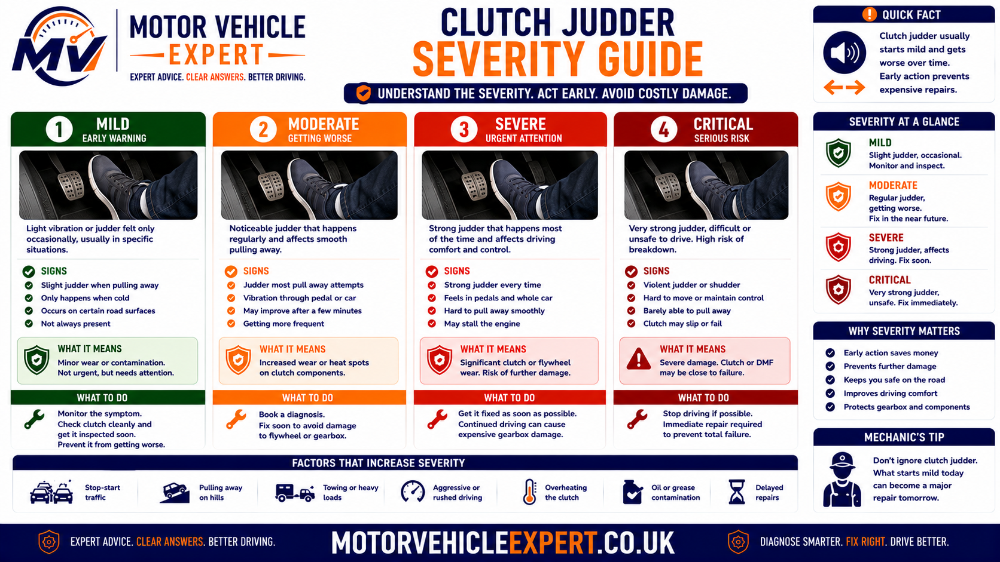
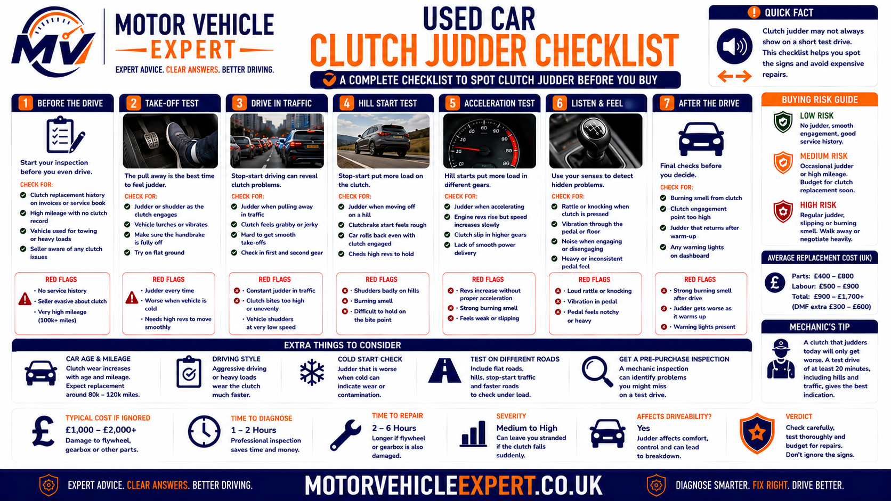
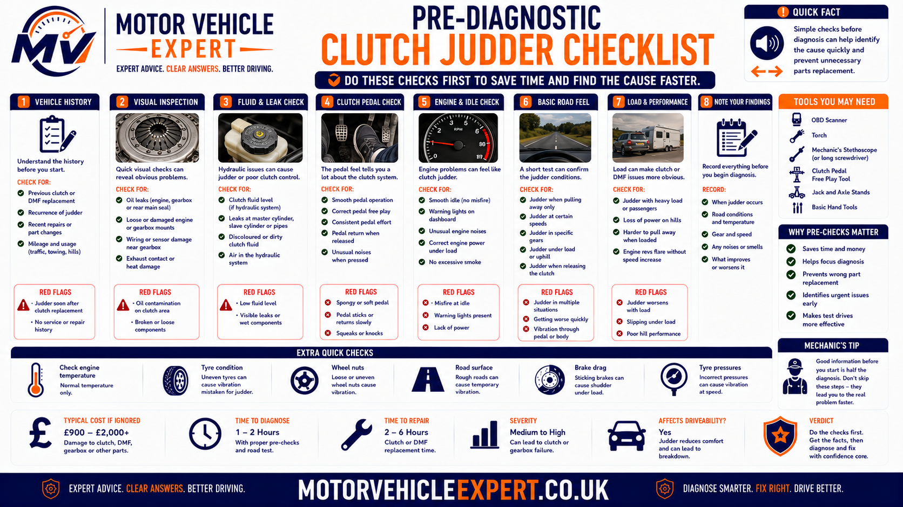

Why does a clutch judder when pulling away?
Clutch judder happens when engine torque is not transferred smoothly through the clutch as the vehicle begins moving. Instead of the clutch plate gripping the flywheel and pressure plate progressively, the friction surfaces grip, release and grip again in rapid succession. That uneven engagement sends vibration through the gearbox, mountings, body and sometimes the clutch pedal.
The most common mechanical causes are an uneven or heat-damaged clutch plate, oil contamination, a distorted pressure plate, excessive dual mass flywheel movement and worn engine or gearbox mounts. A clutch fitted recently can also judder if the flywheel condition, alignment, component compatibility, mounting condition or installation procedure was not correct.
Most likely causes
Uneven clutch friction surfaces, contamination, flywheel wear, pressure plate distortion and weak powertrain mountings are among the most common causes.
Typical symptom
The vehicle shakes as the clutch reaches its bite point, usually in first gear or reverse, but the vibration reduces once the clutch is fully engaged.
Is it safe to drive?
Mild judder may not require immediate recovery, but severe shaking, burning smells, knocking, clutch slip or difficulty moving away safely should be treated as urgent.
Best next step
Confirm when the fault occurs and have the clutch, flywheel, hydraulics and engine and gearbox mountings checked before authorising replacement parts.
Do not diagnose clutch judder from vibration alone. First establish whether the symptom appears only during clutch take-up, whether it is worse in first gear or reverse, whether temperature changes it and whether the engine moves excessively under load. These details help separate a clutch fault from an engine-running problem or failed mounting.
A clutch kit will not cure judder caused by damaged mountings, an oil leak, an unsuitable flywheel surface or a faulty dual mass flywheel. The complete clutch and powertrain system should be assessed before expensive parts are ordered.
Symptoms of clutch judder when pulling away
Clutch judder is usually most noticeable while the clutch pedal is passing through its bite point. The car may shake through the body, seats, pedals or gear lever as drive begins to transfer, then become smoother once the clutch pedal is fully released. The exact conditions that trigger the vibration provide important diagnostic clues.
Vibration while moving off
The most typical symptom is a rapid shaking sensation as the car begins moving from a standstill. The vibration usually peaks while the clutch is partially engaged and reduces once full drive is established.
Judder in first gear
First gear places a high torque load through the clutch at low road speed. Uneven friction, flywheel movement or weak mountings may therefore be most obvious during a normal forward pull-away.
Judder in reverse
Reverse changes the direction of drivetrain loading and often uses a low gear ratio. Worn mounts, clutch irregularities and driveline movement can feel stronger in reverse than in first gear.
Worse when cold
Moisture on the friction surfaces, cold engine behaviour or mountings that become firmer at low temperature can make judder strongest during the first few pull-aways of the day.
Worse when hot
A glazed, contaminated or heat-damaged clutch may engage less consistently after slow traffic, repeated hill starts or heavy clutch use has raised the temperature of the assembly.
Judder on hills
Pulling away uphill requires more clutch torque than moving away on level ground. This added load can reveal a worn clutch, excessive flywheel movement or weak powertrain mounting.
Judder while towing
Additional trailer weight increases the load placed on the clutch during take-off. A fault that is mild during normal driving may become much more noticeable while towing or carrying a heavy load.
Movement through the gear lever
A gear lever that moves sharply as the clutch engages may point towards excessive engine or gearbox movement rather than friction material alone, although both problems can exist together.
Knock as drive takes up
A separate knock or clunk as the car begins moving may indicate a failed mounting, excessive dual mass flywheel travel or driveline backlash that is being exposed during clutch engagement.
True clutch judder normally appears while the clutch is engaging and then reduces when the clutch is fully released. Vibration that continues at idle, under steady acceleration or at a particular road speed may come from the engine, wheels, driveshafts or another part of the drivetrain.
Repeated hill starts, holding the vehicle on the clutch or applying excessive throttle can overheat the friction material and worsen the fault. A controlled road test should confirm the symptom without abusing the clutch.
How clutch judder happens
A manual clutch must change smoothly from fully released to fully engaged. When the driver lifts the clutch pedal, the pressure plate gradually clamps the clutch plate between the pressure plate and flywheel. The clutch plate initially slips in a controlled way so the stationary gearbox can match the rotating engine without a sudden shock.
Judder develops when this controlled slip becomes inconsistent. One part of the friction surface may grip more strongly than another, or the assembly may move because of flywheel wear, pressure plate distortion or weak mountings. The clutch then alternates rapidly between gripping and releasing rather than applying drive smoothly.
1. Clutch pedal rises
The release bearing moves away from the pressure plate diaphragm, allowing clamping force to begin returning to the clutch plate.
2. Bite point begins
The clutch plate starts contacting the flywheel and pressure plate. Engine torque begins transferring into the gearbox.
3. Grip becomes uneven
Contamination, heat damage, distortion or uncontrolled movement causes the clutch to grip and release unevenly across its surface.
4. Vibration reaches the body
Repeated torque pulses pass through the gearbox, mountings and bodyshell, producing the shaking felt by the driver and passengers.
Why the vibration disappears once moving
When the clutch is fully engaged, the clutch plate, flywheel and pressure plate should rotate together at nearly the same speed. The controlled-slip phase has ended, so a fault affecting take-up may no longer produce obvious vibration. This is why a car can judder badly while moving away yet feel normal through the higher gears.
Why additional load makes judder worse
Hill starts, towing, carrying heavy loads and moving away with the steering on full lock all increase the effort required to start the vehicle moving. More torque must pass through the partially engaged clutch, which can amplify uneven friction or movement in the flywheel and mountings.
The same shaking sensation can be produced by several faults. Diagnosis should identify whether the vibration originates in the clutch friction surfaces, flywheel, mountings, engine operation or drivetrain before repair work begins.
Common causes of clutch judder
Clutch judder is often blamed on the clutch plate immediately, but the complete clutch and powertrain system must be considered. A worn clutch can cause the fault, but so can contamination, flywheel damage, weak mountings, pressure plate distortion and errors made during a previous clutch replacement.
Worn or uneven clutch plate
Friction material that has worn unevenly, glazed through heat or developed damaged damper springs may no longer grip the flywheel progressively.
Likelihood: HighOil-contaminated clutch
Engine oil or gearbox oil on the clutch plate changes friction unpredictably, causing the plate to grip and release as the pedal passes through the bite point.
Likelihood: Medium to highDual mass flywheel wear
Excessive rotational or rocking movement inside a dual mass flywheel can prevent torque from passing smoothly into the gearbox.
Likelihood: Vehicle dependentWorn engine mount
A weak engine mounting allows the engine to twist excessively when torque is applied, creating shaking or a repeated rocking motion.
Likelihood: MediumWorn gearbox mount
A damaged gearbox mounting can allow the transmission to lift, rotate or strike nearby components as the clutch begins taking up drive.
Likelihood: MediumPressure plate distortion
Heat damage, uneven diaphragm pressure or a distorted pressure plate face can produce inconsistent clamping force around the clutch plate.
Likelihood: MediumDamaged flywheel surface
Heat spots, cracks, scoring or excessive run-out on a solid flywheel can prevent even clutch contact and reproduce judder after a new clutch is fitted.
Likelihood: MediumIncorrect clutch installation
Poor alignment, contamination, incorrect tightening procedure, unsuitable components or failure to correct associated faults can create immediate post-repair judder.
Likelihood: Higher after recent repairEngine running problem
A misfire, unstable idle or weak low-speed torque can make the car shudder as load is applied, even when the clutch assembly itself is serviceable.
Likelihood: Must be ruled out
The correct repair depends on identifying which part is creating the uneven torque transfer. Replacing only the clutch kit may not cure judder if the flywheel, oil seals or mountings are responsible.
A high-mileage vehicle may have a worn clutch, tired dual mass flywheel and weakened gearbox mounting together. A complete inspection is important because correcting only one defect may leave part of the vibration behind.
Worn or uneven clutch plate
The clutch plate carries friction material on both sides and transfers engine torque into the gearbox input shaft. Over time, the friction lining wears and can become glazed, cracked, heat-spotted or uneven. The plate's internal damper springs may also weaken or loosen.
When the friction surface no longer contacts the flywheel and pressure plate evenly, one area may grip before another. The plate twists, releases and grips again, producing the repeated vibration associated with clutch judder.
Typical symptoms
Judder at the bite point, inconsistent engagement, a high or changing bite point, occasional clutch smell and possible slip under heavier acceleration.
Diagnostic clues
The fault appears mainly during take-up, may worsen when hot and often becomes more noticeable on hills, in reverse or with additional vehicle load.
Likely repair
Gearbox removal and clutch kit replacement, followed by inspection of the flywheel, release system, oil seals and mountings before reassembly.
Clutch wear does not always cause slip first
Some drivers expect engine revs to rise before a clutch can be worn. However, a clutch can develop uneven engagement or heat damage and judder while still holding adequately under normal acceleration. Judder and slip are related clutch symptoms, but they are not the same fault description.
For a dedicated explanation of engine speed rising without matching vehicle acceleration, see the clutch slipping symptoms guide .
Once the gearbox has been removed, fitting a clutch without assessing the flywheel, release bearing, guide tube, fork, hydraulic components and oil seals creates a risk of repeat labour.
Oil-contaminated clutch plate
The clutch operates inside the bellhousing between the engine and gearbox. It must remain dry. If engine oil or gearbox oil reaches the friction lining, the clutch plate may alternate between slipping and gripping as it rotates, producing severe or inconsistent judder.
Rear crankshaft oil seal
A leaking rear crankshaft seal can allow engine oil to enter the bellhousing from the engine side. Oil may spread across the flywheel and clutch plate.
Gearbox input shaft seal
A leaking gearbox input shaft seal can release transmission oil towards the centre of the clutch assembly and contaminate the friction material.
Signs that support contamination
- Judder varies noticeably from one pull-away to another.
- The clutch sometimes feels smooth and sometimes grabs sharply.
- A burning or oily smell appears after repeated clutch use.
- Clutch slip develops under higher engine load.
- Oil is visible around the lower bellhousing area.
- The fault returns after a clutch was replaced without curing a leak.
External oil around the engine or gearbox does not prove the clutch is contaminated, because oil can travel from higher components. Likewise, a dry-looking bellhousing exterior does not guarantee the internal clutch surfaces are clean. Confirmation often requires gearbox removal.
Oil-soaked friction material cannot usually be restored reliably. The source of the leak must be repaired and the affected clutch components replaced. Fitting a new clutch without stopping the leak risks rapid recurrence.
When judder is accompanied by a strong hot friction smell, compare the symptoms with the clutch burning smell guide .
Dual mass flywheel faults
Many modern diesel and higher-torque petrol vehicles use a dual mass flywheel, commonly shortened to DMF. It contains two flywheel masses connected by internal springs, bearings and damping components. Its purpose is to absorb engine torsional vibration before it reaches the gearbox.
As the internal mechanism wears, the two masses can develop excessive rotational travel, rocking movement or poor damping. The clutch may then engage against a surface that is not controlling torque smoothly, causing judder during take-up.
Take-up vibration
The car shakes as drive begins transferring, particularly under higher load or when moving away uphill.
Rattle or knock
A worn DMF may rattle at idle, knock during engine start-up or shutdown, or produce a clunk as drive changes direction.
Gearbox vibration
Reduced flywheel damping can allow more engine vibration to enter the gearbox, gear lever and vehicle structure.
Release bearings, gearbox bearings, pulleys, mounts and engine running faults can produce similar noises. Flywheel movement should be assessed against the manufacturer's inspection limits whenever possible.
Worn engine and gearbox mounts
Engine and gearbox mounts support the powertrain while controlling vibration and torque movement. During a pull-away, the engine attempts to rotate in the opposite direction to the drivetrain. Healthy mounts limit this movement while isolating vibration from the body.
A split rubber mount, collapsed hydraulic mount or loose mounting bracket may allow the engine and gearbox to move suddenly as the clutch bites. The resulting rocking can feel almost identical to clutch judder.
Supporting symptoms
Excessive movement during start-up or shutdown, vibration at idle, knocking during gear changes and a visible engine lift under load.
Why reverse can be worse
Reverse applies torque in the opposite direction, loading different sides of the mountings and exposing movement that may be mild in first gear.
Inspection priority
Check rubber separation, fluid leakage, bracket damage, loose fasteners, contact marks and excessive controlled movement.
Mounting condition matters even when a worn clutch is also present. A replacement clutch may engage more sharply than the old unit and expose a weak mounting that was previously less noticeable.
Because severely insecure engine mountings can have safety and MOT implications, see the dedicated engine mounting MOT guide .
Pressure plate distortion or uneven clamping
The pressure plate clamps the clutch plate against the flywheel. Its diaphragm spring must apply force evenly and its friction face must remain flat. Excessive heat, manufacturing defects, incorrect fitting or long-term wear can reduce that uniformity.
Heat distortion
Repeated clutch slipping can create hot spots and distort the pressure plate face, leading to irregular contact as the clutch engages.
Uneven diaphragm action
Damaged or weakened diaphragm fingers may apply inconsistent clamping force or alter release bearing contact.
Installation damage
Uneven bolt tightening, forced gearbox installation or an incorrect clutch kit can damage the assembly before the vehicle returns to the road.
Pressure plate faults are difficult to confirm externally. If the symptom pattern points towards the clutch assembly and mountings are satisfactory, gearbox removal may be required for inspection.
Why a new clutch may judder after replacement
A clutch replacement should restore smooth engagement, but judder can appear immediately or shortly after repair when an associated defect was missed or the installation was not completed correctly. New-clutch judder should not automatically be dismissed as normal bedding-in.
Flywheel not corrected
A damaged solid flywheel surface or worn dual mass flywheel can cause a new clutch to engage unevenly from the first drive.
Friction surface contamination
Grease, oil, dirty hands or an unresolved oil seal leak can contaminate the new clutch plate during or after installation.
Incorrect component application
A clutch kit that does not exactly match the engine, gearbox, flywheel or release system can create poor engagement and release behaviour.
Mountings disturbed or weakened
Gearbox removal places load on nearby mounts and brackets. A damaged, loose or incorrectly positioned mounting may produce vibration after the repair.
Alignment or fitting error
Incorrect clutch alignment, forced assembly, uneven pressure plate tightening or missing locating components can affect clutch operation.
Engine fault still present
A low-speed misfire or unstable idle may have been mistaken for a clutch fault and can remain after the clutch has been replaced.
Severe or persistent judder after replacement should be documented and reported without unnecessary delay. Avoid repeated high-load testing that could overheat the new clutch and complicate the diagnosis.
For a full post-repair diagnosis, see clutch slip after replacement . Although slip and judder are different symptoms, many installation, contamination and flywheel checks overlap.
Record the fault before parts are removed
A useful clutch diagnosis begins by recording exactly when the symptom appears. This prevents a workshop from relying on a vague description such as “the car shakes” and helps distinguish clutch take-up vibration from engine hesitation, wheel vibration or driveline movement.
Record these conditions
- Cold engine or fully warmed engine
- First gear, reverse or both
- Level road or uphill
- Light throttle or higher engine speed
- Dry weather or after damp conditions
- Vehicle empty, heavily loaded or towing
Record associated symptoms
- Burning smell
- Clutch slip
- Knocking or rattling
- Vibration at idle
- Gear lever movement
- Oil leakage beneath the vehicle
The Motor Vehicle Expert Diagnostic App can help you organise the symptoms, operating conditions and likely fault areas before speaking to a garage. It does not replace a physical inspection, but a structured symptom record can make the workshop diagnosis more focused and reduce guesswork.
Engine vibration vs clutch judder
Not every vibration during a pull-away comes from the clutch. An engine that is misfiring, idling unevenly or producing weak low-speed torque can shake as the clutch applies load. The driver may feel the vibration at the same moment as clutch engagement even though the original fault is on the engine side.
The most useful distinction is whether the vibration is tied directly to clutch take-up or whether it can be reproduced while the clutch is fully released, while the vehicle is stationary or during normal acceleration after the car is already moving.
Vibration follows the bite point
- The shaking peaks while the clutch is partially engaged.
- The symptom reduces once the clutch is fully released.
- First gear and reverse are usually the worst conditions.
- Hill starts or additional load make the vibration stronger.
- The engine may idle smoothly with the clutch pedal depressed.
- Burning smells, clutch slip or flywheel noise may also be present.
Vibration continues beyond clutch take-up
- The engine shakes or hunts while the vehicle is stationary.
- The vibration remains after the clutch is fully engaged.
- Acceleration is hesitant, uneven or accompanied by misfire.
- The engine warning light may be illuminated or flashing.
- The exhaust note sounds irregular or fuel economy has worsened.
- The symptom may appear in neutral when the engine is lightly revved.

A vibration that occurs only through the bite point supports a clutch, flywheel or mounting fault. A rough engine outside that engagement window requires engine diagnosis before the clutch is condemned.
Checks that help separate the fault
Idle-quality check
Allow the engine to idle with the gearbox in neutral and the clutch pedal both raised and depressed. Note any misfire, surging or excessive vibration independent of moving off.
Clutch-window check
During a controlled pull-away, identify whether the vibration begins at the bite point and stops immediately after the pedal is fully released.
Post-engagement check
Once the clutch is fully engaged, accelerate gently in the same gear. Continued hesitation or shudder may point towards engine or driveline problems.
Applying more engine speed may make a weak or misfiring engine pull away more smoothly, but it can also hide the original symptom and overheat the clutch. The engine should produce stable low-speed torque without requiring abusive clutch use.
Dual mass flywheel vs clutch plate judder
The clutch plate and dual mass flywheel work together, so their symptoms can overlap. Both can create vibration at the bite point, and gearbox removal may ultimately be needed to confirm the condition. Supporting noises, vibration outside the pull-away and the vehicle's repair history can help determine which component deserves greater suspicion.
Uneven friction engagement
- Judder is concentrated around the clutch bite point.
- A burning smell may follow repeated pull-aways.
- Slip may appear in higher gears under heavy acceleration.
- The engagement can feel grabby or inconsistent.
- Oil contamination may be visible after gearbox removal.
- The flywheel may remain quiet at idle and shutdown.
Excess movement or poor damping
- There may be a rattle or knock at idle.
- Noise can occur during engine start-up or shutdown.
- The gear lever or gearbox casing may vibrate noticeably.
- Drive changes can produce a clunk or excessive backlash.
- Judder may be strongest under low-speed high-torque load.
- Internal movement may exceed the manufacturer's limits.

A clutch kit should not be ordered before the flywheel strategy has been decided. Reusing a flywheel outside its wear limits can leave the vehicle with repeat vibration and duplicate gearbox-removal labour.
Ask whether the quotation includes inspection of the flywheel and whether the garage will contact you before reassembly if additional parts are required. This avoids rushed decisions while the vehicle is dismantled.
Flywheel design varies by vehicle, engine and gearbox. Some cars use a solid flywheel, while others use a dual mass unit. Parts should be identified from the exact registration, VIN or removed components rather than engine fuel type alone.
How a mechanic diagnoses clutch judder
A good diagnosis starts with symptom confirmation and progresses from checks that do not require dismantling towards gearbox removal only when the evidence supports it. This protects the owner from replacing a clutch when the real fault is an engine-running issue, mount, hydraulic problem or another driveline component.
1. Confirm the complaint
Record whether the fault is present in first gear, reverse or both, and whether it changes with temperature, load, road gradient or engine speed.
2. Check engine operation
Assess idle quality, warning lights, misfire symptoms, fuel or air faults and whether the engine produces stable low-speed torque.
3. Inspect mountings
Examine engine and gearbox mounts, brackets and fasteners for collapse, separation, leakage, looseness and excessive movement.
4. Assess clutch operation
Check pedal travel, bite point, release quality, hydraulic fluid, leaks, abnormal bearing noise and difficulty selecting gears.
5. Listen for flywheel clues
Note rattles, knocks and vibration during idle, clutch-pedal changes, engine start-up, shutdown and transitions between drive and overrun.
6. Check for contamination
Inspect the engine-to-gearbox joint and bellhousing area for oil, while recognising that internal contamination may not be visible externally.
7. Review repair history
Confirm whether the clutch, flywheel, hydraulics, oil seals or mountings have been replaced and whether the symptom began after recent work.
8. Remove the gearbox if justified
Inspect the clutch plate, pressure plate, release system, flywheel, gearbox input area and rear engine seal before agreeing the final repair.

The workflow prevents parts substitution from replacing evidence. A road test and external checks cannot prove every internal fault, but they can establish whether gearbox removal is justified.
Road-test method
Forward pull-away
Move away normally in first gear on level ground. Note the pedal position, engine speed and duration of the vibration without holding the clutch at the bite point unnecessarily.
Reverse comparison
Repeat the test in a safe location using reverse. A major difference between forward and reverse may increase suspicion of mounting or directional driveline movement.
Temperature comparison
Compare the first cold pull-away with operation after normal driving. Do not create heat deliberately through repeated clutch slipping.
Workshop checks before gearbox removal
- Scan for engine-management faults where symptoms support it.
- Check engine idle stability and cylinder contribution.
- Inspect engine and gearbox mounts under controlled load.
- Check clutch and brake-fluid reservoir level where shared.
- Inspect master and slave cylinder areas for leakage.
- Listen for release-bearing and flywheel-related noises.
- Check clutch disengagement and gear-selection quality.
- Inspect for oil leakage around the engine and gearbox joint.
- Confirm wheel, driveshaft and suspension vibration is not being confused with clutch judder.
Testing powertrain movement with the brakes applied can place high load through the clutch, mounts and drivetrain. It should only be carried out by a competent person with sufficient space, correct vehicle control and no one positioned in front of or behind the car.
Because clutch inspection involves substantial labour, the garage should be able to explain which road-test and external findings point towards an internal clutch or flywheel fault. A diagnosis may remain provisional until dismantling, but it should not be a blind guess.
What different clutch judder patterns may indicate
Symptom patterns are not proof by themselves, but they help prioritise the inspection. The same vehicle can also have more than one defect, so the final decision should combine road-test behaviour, physical checks and component condition.
| Judder pattern | Fault areas to prioritise | Supporting checks |
|---|---|---|
| Only during the bite point | Clutch plate, pressure plate, flywheel | Compare first and reverse, cold and hot operation |
| Much worse in reverse | Engine mount, gearbox mount, driveline movement | Inspect directional powertrain movement and contact marks |
| Worse after heavy traffic | Glazed clutch, contamination, heat-damaged friction surfaces | Check smell, bite consistency and slip under load |
| Accompanied by idle rattle | Dual mass flywheel, release system, gearbox noise | Compare clutch pedal raised and depressed, start-up and shutdown |
| Present at idle and while moving | Engine-running fault, mounts, general powertrain vibration | Check misfire, warning lights and engine movement |
| Started after clutch replacement | Flywheel condition, contamination, fitment, mounts | Review invoice, parts fitted and timing of symptom onset |
| Judder plus increasing engine revs | Clutch wear or contamination causing judder and slip | Controlled higher-gear load test by a competent technician |
| Judder plus oil around bellhousing | Rear crankshaft seal or gearbox input seal | Trace leak source and inspect clutch internally if justified |
A table cannot confirm an internal clutch defect. Its purpose is to show which evidence should be gathered next and reduce the risk of replacing parts without checking associated systems.
Clutch judder severity guide
The urgency depends on how strong the vibration is, whether the vehicle can move away predictably and whether other symptoms suggest rapid deterioration. Even mild judder should be monitored because a fault affecting the clutch, flywheel or mountings rarely improves permanently without attention.

Use the severity level together with associated symptoms. A mild vibration accompanied by fluid leakage or loud flywheel noise deserves more urgency than vibration intensity alone may suggest.
Mild and occasional judder
The vibration is light, the vehicle moves away predictably and no burning smell, slip, knocking, leakage or gear-selection problem is present.
Record when it happens, avoid unnecessary clutch slipping and arrange inspection if it becomes more frequent or stronger.
Regular or worsening judder
The car shakes on most pull-aways, the symptom is becoming stronger or it is accompanied by occasional knocking, clutch smell, movement through the gear lever or inconsistent engagement.
Book diagnosis promptly. Limit heavy loads, towing, hill starts and congested driving that repeatedly heats the clutch.
Severe or unsafe judder
The vehicle shakes violently, cannot pull away predictably, loses drive or produces loud grinding, heavy knocking, smoke, significant fluid leakage or a strong burning smell.
Stop in a safe place, switch off when appropriate and arrange professional assistance or recovery rather than continuing.
Factors that increase urgency
- The symptom has deteriorated quickly over a short distance.
- The clutch begins slipping after the judder.
- There is a strong burning smell or visible smoke.
- The engine or gearbox appears to move excessively.
- A heavy knock occurs during take-up, start-up or shutdown.
- Gears become difficult to select or the car creeps with the pedal depressed.
- Oil or hydraulic fluid is leaking beneath the vehicle.
- The vehicle rolls or surges unexpectedly while manoeuvring.
- The clutch pedal becomes abnormally light, heavy or fails to return.
If the vehicle cannot move away smoothly enough to join traffic, cross a junction or manoeuvre safely, it should not be driven merely because drive is still technically available. Recovery is safer than risking a loss of control or complete clutch failure.
When should you stop driving with clutch judder?
Mild clutch judder does not always mean the vehicle will fail immediately, but the decision to continue driving should be based on control, predictability and the presence of additional symptoms. A car that cannot pull away smoothly enough to enter traffic safely should not be driven simply because the clutch still transmits some drive.
Mild, stable judder
The vibration is light, has not worsened quickly and the vehicle moves away predictably without clutch slip, strong smells, fluid leakage, abnormal pedal behaviour or loud mechanical noise.
Regular or worsening judder
The car shakes during most pull-aways, hill starts are becoming difficult or the fault is accompanied by occasional knocking, clutch smell, gear-lever movement or inconsistent engagement.
Severe or unsafe behaviour
The vehicle shakes violently, surges unexpectedly, loses drive, produces smoke, leaks significant fluid or cannot move away with enough control to join traffic or cross a junction safely.
Stop driving immediately if:
- The vehicle cannot pull away predictably or safely.
- The clutch suddenly loses drive or begins slipping severely.
- A loud metallic grinding or heavy repeated knock develops.
- Smoke appears from beneath the bonnet or vehicle.
- There is a strong burning-clutch smell that does not clear.
- The clutch pedal remains on the floor or changes suddenly.
- Gear selection becomes difficult enough to affect vehicle control.
- A significant engine, gearbox or hydraulic-fluid leak is visible.
- The engine or gearbox appears to strike surrounding components.
- The fault worsens substantially within a short journey.
Using excessive throttle and prolonged clutch slip may temporarily smooth the pull-away, but it creates additional heat and can accelerate damage to the clutch plate, pressure plate and flywheel. It can also make the vehicle surge forward unexpectedly.
Driving precautions before an inspection
Where the judder is mild, stable and the vehicle remains safe to control, use the car as little as reasonably possible before diagnosis. Avoid towing, carrying unnecessary weight, repeated hill starts, congested stop-start routes and holding the vehicle on the clutch.
Use the handbrake on hills
Hold the vehicle securely with the parking brake, establish the correct engine speed and release the clutch progressively. Do not balance the vehicle using clutch slip.
Leave additional manoeuvring space
Avoid situations that require repeated inching forward or rapid changes between first gear and reverse. Allow room to complete the manoeuvre with fewer clutch engagements.
Driving a severely juddering vehicle can turn a mounting or clutch repair into a larger clutch-and-flywheel job. Where control is poor or mechanical noise is severe, recovery is the safer and potentially cheaper decision.
Will clutch judder fail an MOT?
Clutch operation is not normally assessed as a separate item during the standard UK MOT test. A manual car does not automatically fail merely because its clutch judders while pulling away. The MOT is primarily a minimum roadworthiness inspection and is not a full mechanical assessment of clutch wear or future reliability.
However, a fault associated with the judder may fall within an area that is inspected. Insecure engine or gearbox mountings, serious fluid leaks or another defect affecting safe control can still influence the result. The vehicle must also be capable of being driven onto the test equipment safely.
Clutch judder alone
Judder during clutch take-up is not normally listed as a direct MOT failure item and may not be recorded if no testable defect is identified.
Insecure powertrain mounting
A severely deteriorated, fractured, loose or insecure mounting may be relevant where it affects security or allows dangerous movement of the engine or transmission.
Serious fluid leakage
A substantial leak may be assessed according to its location, severity, environmental impact and whether it creates a safety risk or affects another tested component.
Why passing an MOT does not prove the clutch is healthy
The tester does not remove the gearbox, measure clutch friction material or dismantle the flywheel. A worn, contaminated or heat-damaged clutch may therefore pass an MOT while still requiring expensive repair. An MOT certificate should never replace a mechanical inspection when a clutch symptom is already present.
| Condition | Likely MOT relevance | What the owner should do |
|---|---|---|
| Mild clutch judder with no other defect | Not normally a direct failure item | Arrange diagnosis despite any MOT pass |
| Clutch slipping but vehicle remains driveable | Not usually tested as clutch wear | Repair before drive is lost or heat damage increases |
| Severely insecure engine or gearbox mounting | May fail depending on security and risk | Repair before presenting the vehicle |
| Significant engine or gearbox oil leak | May be recorded or fail depending on severity | Trace and repair the leak |
| Vehicle cannot move safely onto test equipment | Test may not be completed safely | Recover the vehicle for repair first |
| Judder caused by an engine misfire | Emissions or warning-light issues may be relevant | Diagnose the engine fault before the test |
A vehicle can pass its MOT and still require a clutch, flywheel, oil seal or mounting repair shortly afterwards. When buying a used car, assess the symptom itself rather than relying on the remaining length of the MOT certificate.
For the wider MOT position on clutch defects, read can a clutch fail an MOT? For mounting-specific guidance, see can an engine mount fail an MOT?
Clutch judder repair costs in the UK
The cost of repairing clutch judder depends on the underlying fault, vehicle design, labour time, parts quality and whether the gearbox must be removed. A failed mounting may cost a few hundred pounds, while a clutch and dual mass flywheel repair on a difficult vehicle can exceed £1,500.
The figures below are broad UK planning estimates rather than fixed quotations. Main-dealer pricing, premium vehicles, four-wheel-drive systems, high-performance models and vehicles with restricted gearbox access may cost considerably more.
Clutch judder inspection
Road test, engine-running checks, mounting inspection, clutch operation assessment and an initial review of leaks and noises.
£60–£150Clutch kit replacement
Replacement clutch plate, pressure plate and release bearing or concentric slave cylinder where included in the kit.
£550–£1,100Clutch and dual mass flywheel
Clutch kit and dual mass flywheel replacement during the same gearbox-removal operation.
£900–£1,800+Engine mount replacement
Replacement of one engine mounting, including labour. Hydraulic, active or difficult-to-access mounts may cost more.
£180–£500Gearbox mount replacement
Replacement of a worn transmission mounting or torque-reaction mount where excessive movement causes take-up vibration.
£150–£450Rear crankshaft seal with clutch
Repair of an engine rear oil seal while the gearbox and clutch are removed. Costs rise where additional dismantling is required.
£700–£1,400+Input shaft seal with clutch
Repair of a gearbox input-area oil leak plus replacement of contaminated clutch components where required.
£700–£1,500+Clutch master cylinder
Replacement and bleeding of a faulty clutch master cylinder where poor hydraulic control contributes to inconsistent engagement.
£180–£450External slave cylinder
Replacement of an externally mounted slave cylinder, followed by hydraulic bleeding and operation checks.
£150–£350Concentric slave cylinder
An internal concentric slave cylinder requires gearbox removal and is normally replaced with the clutch to avoid repeated labour.
£600–£1,200+Solid flywheel assessment
Inspection and, where suitable and permitted, professional resurfacing or replacement of a heat-damaged solid flywheel.
£150–£600 additionalJudder after recent replacement
Diagnostic labour may initially be chargeable unless the garage accepts the fault under its parts or workmanship warranty.
£0–£300 initial assessmentRequest the price for the expected repair and the maximum likely price if the flywheel, oil seals, hydraulic release bearing or mountings are also found defective. This gives a more realistic budget before the gearbox is removed.
Clutch judder repair-cost decision table
Use this table to understand how the symptom pattern may affect the likely repair scope. It is a budgeting guide only and cannot replace a vehicle-specific inspection.
| Diagnosis or finding | Likely repair | Broad UK estimate | Repair priority |
|---|---|---|---|
| Mild judder with no confirmed defect | Road test and structured inspection | £60–£150 | Book diagnosis before replacing parts |
| One failed engine or gearbox mount | Replace affected mounting and inspect others | £150–£500 | Prompt repair if movement is excessive |
| Worn clutch plate and satisfactory flywheel | Clutch kit and associated release components | £550–£1,100 | Repair before slip or control worsens |
| Worn clutch and failed dual mass flywheel | Clutch kit and DMF replacement | £900–£1,800+ | High-priority major repair |
| Oil-contaminated clutch | Repair leak and replace contaminated clutch | £700–£1,500+ | Repair source and consequence together |
| Internal concentric slave cylinder fault | Gearbox removal, slave cylinder and usually clutch | £600–£1,200+ | Avoid duplicate gearbox-removal labour |
| Engine misfire mistaken for clutch judder | Engine diagnosis and fault-specific repair | £80–£1,000+ | Correct engine fault before clutch work |
| Judder following recent clutch replacement | Warranty inspection, flywheel and installation review | Warranty dependent | Return to fitting garage promptly |
| Multiple mounts plus clutch wear | Combined mounting and clutch repair | £800–£1,600+ | Agree complete repair scope before work |
What should be included in a clutch quotation?
- The exact clutch kit brand and components included.
- Whether the release bearing or concentric slave cylinder is included.
- Whether the dual mass flywheel is included or priced separately.
- How the existing flywheel will be assessed.
- Whether gearbox oil replacement is included.
- Whether clutch-hydraulic bleeding is included.
- Whether accessible oil seals will be inspected.
- Whether engine and gearbox mountings will be checked.
- The labour warranty and parts-warranty period.
- Whether diagnostic charges are deducted from the repair invoice.
A low headline price may exclude the flywheel, internal slave cylinder, gearbox oil, new fasteners, oil-seal repair or additional labour. Compare the complete scope and warranty rather than choosing on price alone.
For more detail on vehicle-specific pricing and the components commonly replaced together, see the UK clutch replacement cost guide .
Should you buy a used car with clutch judder?
A used car that judders while pulling away should be treated as having an unresolved mechanical fault until a competent inspection proves otherwise. The symptom may come from a relatively straightforward mounting problem, but it can also indicate a worn clutch, contaminated friction surfaces, a failed dual mass flywheel or poor workmanship following an earlier repair.
Do not rely on a seller describing the fault as normal clutch behaviour, damp weather, driver technique or a clutch that only needs bedding in. Those explanations are possible in limited circumstances, but they do not remove the need to establish why the vehicle shakes during take-up.
Proceed only after inspection
The judder is mild, an independent inspection identifies a relatively contained fault and the purchase price leaves enough budget for the confirmed repair.
Repair scope remains uncertain
The car drives normally once moving, but the clutch, flywheel and mountings have not been inspected and there is no credible recent repair documentation.
Severe symptoms or poor history
The car shakes violently, slips, smells of burning friction, knocks heavily, leaks oil or has recently received clutch work that the seller cannot document properly.

Complete the checks during a proper road test with the seller's permission. Do not attempt aggressive clutch tests, prolonged slipping or unsafe hill starts in a vehicle you do not own.
Used-car clutch judder road-test checklist
Before starting the engine
- Confirm the engine is genuinely cold where possible.
- Check beneath the car for fresh oil or hydraulic fluid.
- Inspect service records and clutch-replacement invoices.
- Check whether the flywheel was replaced with the clutch.
- Look for warnings about clutch, gearbox or mounting faults.
- Ask when the seller first noticed the vibration.
During start-up
- Listen for a flywheel rattle or heavy start-up knock.
- Check whether the engine idles smoothly.
- Observe excessive engine movement or body vibration.
- Press and release the clutch pedal while listening for noise.
- Check that the pedal returns smoothly and consistently.
- Confirm gears select cleanly before moving away.
During the road test
- Move away normally in first gear on level ground.
- Repeat carefully in reverse in a safe location.
- Note whether the gear lever moves during take-up.
- Check whether judder changes as the vehicle warms up.
- Listen for knocking during acceleration and overrun.
- Check for clutch slip without deliberately abusing the car.
After the road test
- Check for a burning clutch or hot-oil smell.
- Listen for abnormal noise during engine shutdown.
- Look again for fresh fluid leakage.
- Ask whether the seller will permit an independent inspection.
- Price the worst credible repair before negotiating.
- Do not pay a deposit based on a verbal promise to repair it later.
Some vehicle models may have recognised clutch characteristics, but strong or worsening vibration still requires assessment. Ask for manufacturer information, a specialist opinion or evidence from a comparable fault-free vehicle rather than accepting a seller's claim.
Questions to ask the seller
- When did the clutch judder first begin?
- Is it worse when cold, hot, reversing or moving uphill?
- Has the clutch ever slipped or produced a burning smell?
- Has the clutch kit been replaced previously?
- Was the dual mass flywheel replaced or reused?
- Were the rear crankshaft and gearbox input seals inspected?
- Have any engine or gearbox mounts been replaced?
- Is there an itemised invoice with parts and labour warranty?
- Has a garage diagnosed the current fault in writing?
- Will the seller allow an independent pre-purchase inspection?
Until the gearbox has been removed, a buyer may not know whether the repair requires only a clutch kit or also a flywheel, slave cylinder and oil-seal repair. Negotiate using the credible complete repair cost, not the cheapest possible explanation.
Accept, negotiate or walk away?
The correct buying decision depends on symptom severity, evidence, vehicle value and your ability to absorb an unexpected repair. A cheap car is not automatically a bargain when the gearbox may need removing immediately after purchase.
| Vehicle condition | Recommended decision | Reason |
|---|---|---|
| Mild judder, independent diagnosis confirms one affordable mount | Consider buying with repair allowance | The fault scope is supported by evidence and the expected cost is relatively controlled |
| Mild judder but no diagnosis, invoice or repair estimate | Negotiate heavily or pause the purchase | Internal clutch and flywheel condition remain unknown |
| Judder plus clutch slip or burning smell | Usually walk away unless priced for major repair | The clutch assembly may be worn, contaminated or heat damaged |
| Judder plus flywheel rattle or shutdown knock | Assume clutch and flywheel risk | Repair cost can exceed £1,000 on many vehicles |
| Severe judder and excessive engine movement | Do not buy without specialist inspection | Multiple mounting, clutch or drivetrain faults may be present |
| Judder began immediately after recent clutch replacement | Require warranty resolution before purchase | Installation, flywheel or contamination problems may remain |
| Seller refuses an independent inspection | Walk away | The financial risk cannot be assessed properly |
| Vehicle price already reflects a complete clutch and DMF repair | Consider only with sufficient contingency | Additional oil-seal, hydraulic or mounting costs may still appear |
Clutch wear and flywheel condition are not fully assessed during an MOT. A newly issued certificate does not prove the vehicle will avoid a four-figure clutch repair shortly after purchase.
Pre-diagnostic clutch judder checklist
A driver should not dismantle the clutch system without the correct knowledge and equipment, but several safe observations can make a garage appointment more productive. Record the results accurately rather than trying to force the vehicle to reproduce the fault repeatedly.

A clear symptom history helps the technician reproduce the fault and prevents unrelated vibration from being mistaken for clutch judder.
Record when it happens
- First start of the day
- After the vehicle is warm
- First gear
- Reverse
- Level ground
- Uphill or under load
Record what accompanies it
- Burning smell
- Clutch slip
- Knocking or rattling
- Gear-lever movement
- Pedal noise
- Warning lights
Check the vehicle history
- Clutch replacement date
- Flywheel replacement date
- Mounting repairs
- Oil-leak repairs
- Hydraulic work
- Parts and labour warranty
Safe checks a driver can make
- Check whether the engine idles smoothly before attempting to move.
- Observe whether the clutch pedal returns normally after each use.
- Note whether gears select cleanly with the engine running.
- Look beneath the parked vehicle for fresh fluid leakage.
- Listen for abnormal noises during engine start-up and shutdown.
- Compare the symptom in first gear and reverse only where safe.
- Record whether the fault changes after normal operating temperature.
- Photograph visible leaks and retain recent repair invoices.
- Use the diagnostic app to organise the symptom information.
You can record the symptom pattern using the Motor Vehicle Expert Diagnostic App before arranging a physical inspection. The app can support structured fault reporting, but it cannot inspect the internal clutch, measure flywheel movement or confirm whether the friction surfaces are contaminated.
Checks to leave to a competent technician
- Loading the drivetrain while observing engine movement.
- Working beneath a raised vehicle.
- Removing undertrays to inspect hidden leaks.
- Testing hydraulic pressure or dismantling clutch components.
- Removing the gearbox or starter motor.
- Measuring dual mass flywheel movement.
- Inspecting the clutch plate and pressure plate.
- Assessing flywheel run-out or friction-surface condition.
- Programming or calibrating model-specific clutch systems.
Clutch and gearbox inspection often requires access beneath the vehicle. A lifting jack is not a safe working support. Correctly rated stands, suitable lifting points, level ground and competent working practices are essential.
Explain whether the judder is cold or hot, forward or reverse, light or violent and whether it is accompanied by smell, slip, noise, leakage or pedal changes. Precise information is more useful than requesting a clutch replacement before diagnosis.
Questions to ask the garage before clutch work
Clutch repair involves substantial labour, so the quotation and approval process should be clear before the gearbox is removed. Ask how the diagnosis was reached, which associated components will be inspected and what happens if the flywheel or oil seals are found defective.
Diagnostic questions
- Was the judder reproduced during a road test?
- Were engine and gearbox mounts checked?
- Was engine running quality assessed?
- Are there signs of oil contamination?
- What evidence points towards gearbox removal?
- Could more than one fault be present?
Quotation questions
- Which clutch kit brand will be fitted?
- Is the release bearing or slave cylinder included?
- How will the flywheel be assessed?
- Are oil seals and mountings included if required?
- Will removed components be available for inspection?
- What parts and labour warranty is provided?
Ask the garage to contact you with photographs, measurements or a clear explanation before exceeding the agreed estimate. Written approval protects both the customer and the repairer from confusion over unexpected clutch, flywheel or oil-seal work.
Clutch judder when pulling away: key takeaways
Judder happens during engagement
True clutch judder is usually strongest while the pedal passes through the bite point and reduces once the clutch is fully engaged.
The clutch is not the only cause
Flywheel wear, oil contamination, engine or gearbox mounts, pressure plate distortion and engine-running faults can produce similar symptoms.
Diagnosis should come first
Confirm the conditions, inspect the engine and mounts, assess the hydraulics and gather flywheel clues before approving gearbox removal.
Repair costs vary widely
A mounting repair may cost a few hundred pounds, while a clutch, flywheel and oil-seal repair can exceed £1,500.
An MOT pass proves little
Clutch wear is not fully assessed during the MOT, so a car can pass while still having an expensive take-up fault.
Used-car buyers need evidence
Obtain an independent inspection and price the credible worst-case repair before negotiating or committing to the vehicle.
Clutch judder should not be ignored or diagnosed by guesswork. Mild vibration may remain driveable for a short period, but persistent or worsening judder is evidence that torque is not being transferred smoothly. Inspect the clutch, flywheel, mountings, hydraulics and engine operation as one connected system.
Related clutch and drivetrain guides
Use these guides to compare clutch judder with related clutch, pedal, flywheel and transmission symptoms. Each page covers a separate search intent and diagnostic pathway.
Clutch burning smell
Learn why clutch friction material overheats, how to distinguish a clutch smell from brake or oil smells and when to stop driving.
Clutch burning smell guide →Clutch slipping symptoms
Understand rising engine speed, poor acceleration, high-gear slip and the difference between clutch slip and take-up judder.
Clutch slipping symptoms →Clutch slip in high gears
Find out why clutch slip often appears first under high engine load in fourth, fifth or sixth gear.
High-gear clutch slip guide →Clutch noise when pressed
Compare release-bearing, clutch-fork, pressure-plate and gearbox noises that change when the pedal is depressed.
Clutch pedal noise guide →High clutch bite point
Learn what a high bite point can indicate and how wear, adjustment and hydraulic clutch design affect pedal behaviour.
High clutch bite point guide →Clutch pedal goes to the floor
Diagnose sudden loss of clutch pedal pressure, hydraulic leaks and master or slave cylinder problems.
Clutch pedal on the floor guide →Clutch pedal stuck down
Understand why a clutch pedal may fail to return and when the car should be recovered rather than driven.
Clutch pedal stuck down guide →Clutch slip after replacement
Review contamination, fitting errors, flywheel condition and other reasons a newly installed clutch may not operate correctly.
New clutch fault diagnosis →UK clutch replacement costs
Compare clutch-kit, flywheel, release-bearing and labour costs before authorising a major repair.
Clutch replacement costs →Can a clutch fail an MOT?
Understand what the MOT does and does not inspect when a clutch is worn, slipping, noisy or difficult to operate.
Clutch and MOT guide →Car judders when pulling away
Compare clutch faults with broader engine, drivetrain and vehicle causes of judder during take-off.
General pull-away judder guide →Diagnostic App
Organise the conditions, symptoms and likely systems involved before arranging a physical vehicle inspection.
Open the Diagnostic App →Clutch judder when pulling away FAQs
These answers cover the most common questions UK drivers and used-car buyers ask about clutch vibration during take-up. The visible answers below match the FAQ structured data in the page head.
What causes clutch judder when pulling away?
Clutch judder when pulling away is commonly caused by uneven clutch plate contact, friction material contamination, a damaged pressure plate, excessive flywheel movement, worn engine or gearbox mounts, incorrect clutch installation or driving conditions that expose an existing weakness.
Is clutch judder a sign that the clutch is failing?
Clutch judder can indicate clutch wear or damage, but it does not always mean the clutch is about to fail completely. Engine mounts, gearbox mounts, flywheel movement, oil contamination and installation faults can produce similar symptoms, so the cause should be diagnosed before parts are replaced.
Can I continue driving with clutch judder?
Mild and occasional clutch judder may allow limited driving, but worsening vibration, knocking, difficulty selecting gears, clutch slip, burning smells or severe vehicle shaking should be investigated promptly. Continued driving can increase wear and may damage the flywheel, mounts or clutch assembly.
Why does my car judder only in first gear?
First gear places a high torque load through the clutch while the vehicle is stationary. Uneven clutch engagement, weak mounts, flywheel movement or poor clutch control can therefore be most noticeable when pulling away in first gear.
Why does the clutch judder more in reverse?
Reverse often uses a different gear ratio and changes the direction of drivetrain loading. This can make worn mounts, uneven clutch contact, flywheel movement or driveline backlash more noticeable than when moving forward.
Why does my clutch judder when the car is cold?
Cold-only clutch judder can be caused by moisture on the friction surfaces, changes in friction material behaviour, cold engine running characteristics or mounts that stiffen at lower temperatures. Persistent cold judder still requires inspection if it is severe or worsening.
Why does clutch judder get worse when the car is hot?
Heat can alter the friction characteristics of a worn, glazed or contaminated clutch plate. A heat-damaged pressure plate or flywheel may also distort as temperature rises, producing stronger vibration after repeated starts or slow traffic.
Can a dual mass flywheel cause clutch judder?
Yes. Excessive movement, weakened internal springs, worn bearings or heat damage inside a dual mass flywheel can cause vibration, knocking or uneven torque transfer as the clutch engages.
Can worn engine mounts cause judder when pulling away?
Yes. Worn engine or gearbox mounts can allow the powertrain to move excessively as torque is applied. This movement can feel like clutch judder and may also produce knocking, vibration at idle or movement during gear changes.
Can oil contamination cause clutch judder?
Yes. Engine oil from a rear crankshaft seal or gearbox oil from an input shaft seal can contaminate the clutch friction surfaces. The clutch may then grip and release unevenly, causing judder, slip, burning smells or inconsistent engagement.
Can a new clutch judder after replacement?
A newly replaced clutch can judder because of contamination, incorrect alignment, unsuitable components, uneven flywheel condition, damaged mounts, installation errors or inadequate bedding-in. Severe or persistent judder after replacement should be returned to the fitting garage for inspection.
Can poor driving technique cause clutch judder?
Releasing the clutch too quickly, using too little engine speed or attempting to pull away in too high a gear can make a healthy car shudder. However, a vehicle that repeatedly judders despite smooth clutch control may have a mechanical fault.
Does clutch judder mean the clutch is slipping?
Not necessarily. Judder is vibration during engagement, while clutch slip occurs when engine speed rises without a matching increase in road speed. A damaged or contaminated clutch can sometimes produce both symptoms.
How is clutch judder diagnosed?
Diagnosis normally includes confirming when the vibration occurs, comparing first gear and reverse, testing the vehicle cold and hot, checking engine and gearbox movement, inspecting the clutch hydraulics and looking for signs of flywheel, clutch or oil seal problems.
Will clutch judder fail an MOT?
Clutch operation is not normally tested as a separate MOT item, so clutch judder alone does not automatically cause failure. However, related defects such as insecure engine mountings, serious fluid leaks or another safety-related fault may affect the test.
How much does clutch judder repair cost in the UK?
UK repair costs depend on the cause. A mount replacement may cost a few hundred pounds, while a clutch kit and dual mass flywheel replacement can exceed one thousand pounds on some vehicles. Accurate pricing requires diagnosis and a vehicle-specific quotation.
Should I buy a used car with clutch judder?
A used car with noticeable clutch judder should be treated cautiously because the repair may involve the clutch, flywheel, oil seals or mountings. Arrange an independent inspection and obtain repair estimates before negotiating or committing to the purchase.
When should I stop driving because of clutch judder?
Stop driving and arrange recovery if the vehicle shakes violently, cannot pull away safely, produces loud knocking or grinding, develops a strong burning smell, loses drive, leaks significant fluid or becomes difficult to control.